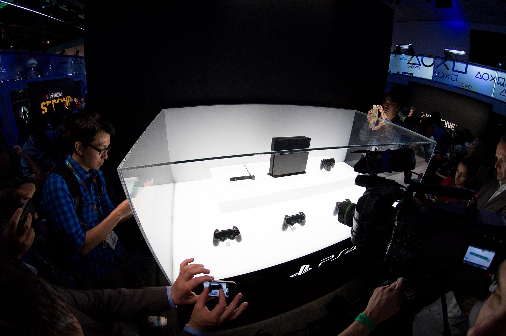

History
The PlayStation 4 (PS4) is a home video game console developed by Sony Interactive Entertainment. Announced as the successor to the PlayStation 3 in February 2013, it was launched on November 15, 2013, in North America, November 29, 2013 in Europe, South America and Australia, and on February 22, 2014 in Japan. A console of the eighth generation, it competes with Microsoft's Xbox One and Nintendo's Wii U and Switch.
Moving away from the more complex Cell microarchitecture of its predecessor, the console features an AMD Accelerated Processing Unit (APU) built upon the x86-64 architecture, which can theoretically peak at 1.84 teraflops, AMD stated that it was the "most powerful" APU it had developed to date. The PlayStation 4 places an increased emphasis on social interaction and integration with other devices and services, including the ability to play games off-console on PlayStation Vita and other supported devices ("Remote Play"), the ability to stream gameplay online or to friends, with them controlling gameplay remotely ("Share Play"). The console's controller was also redesigned and improved over the PlayStation 3, with improved buttons and analog sticks, and an integrated touchpad among other changes. The console also supports HDR10 High-dynamic-range video and playback of 4K resolution multimedia.
The PlayStation 4 was released to critical acclaim, with critics praising Sony for acknowledging its consumers' needs, embracing independent game development, and for not imposing the restrictive digital rights management schemes like those originally announced by Microsoft for the Xbox One. Critics and third-party studios, before its launch, also praised the capabilities of the PlayStation 4 in comparison to its competitors; developers described the performance difference between the console and Xbox One as "significant" and "obvious". Heightened demand also helped Sony top global console sales. By October 2019, PS4 became the second-best-selling home game console of all time, behind the PlayStation 2.
On September 7, 2016, Sony unveiled the PlayStation 4 Slim, a smaller version of the console and a high-end version called the PlayStation 4 Pro, which features an upgraded GPU and a higher CPU clock rate to support enhanced performance and 4K resolution in supported games.
Its successor, the PlayStation 5, was released in November 2020, with Sony discontinuing in Japan all PlayStation 4 models except the, Slim version in January 2021, with it still being produced in Western markets following their statement of 3-year support of PS4.
Game library
PlayStation 4 games are distributed at retail on Blu-ray Disc, and digitally as downloads through the PlayStation Store. Games are not region-locked, so games purchased in one region can be played on consoles in all regions, and players can sign-on to any PS4 console to access their entire digital game library. All PlayStation 4 games must be installed to the console's storage. Additionally a system called "PlayGo" allows users to begin to play portions of a game (such as opening levels) once the installation or download reaches a specific point, while the remainder of the game is downloaded or installed in the background. Updates to games and system software are also downloaded in the background and while in standby. PS4 users will, in the future, be able to browse games and stream games via Gaikai to demo them almost instantaneously. Sony says it is committed to releasing an ever-increasing number of free-to-play games, including PlanetSide 2 and War Thunder. Sony also took steps to make it easier for independent game developers to release games for the PS4 by giving them the option to self-publish their own games rather than rely upon others to distribute their games.
PlayStation 4 is not compatible with any disc of older PlayStation consoles. Emulated versions of selected PlayStation, PlayStation 2 and PlayStation Portable games are available for purchase via PlayStation Store, which are upscaled to high definition and have support for PS4 social features.
In December 2013, Andrew House indicated that Sony was planning to launch a cloud gaming service for the PS4 in North America within the third quarter of 2014, with a European launch to follow in 2015. At Consumer Electronics Show on January 7, 2014, Sony unveiled PlayStation Now, a digital distribution service which will initially allow users to access PlayStation 3 games on the PS4 via a cloud-based streaming system, purchasing games individually or via a subscription, as a solution of no backwards compatibility on the hardware of the console. The United States Open Beta went live on July 31, 2014. The official United States release of the service was on January 13, 2015. As of March 2015 PlayStation Now was in closed beta in the United Kingdom.